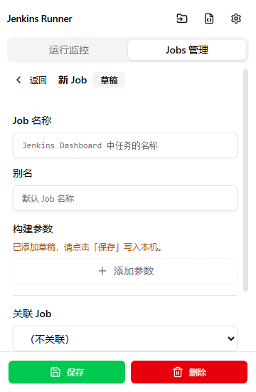
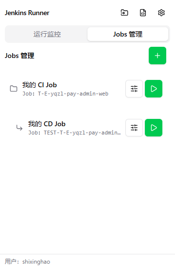
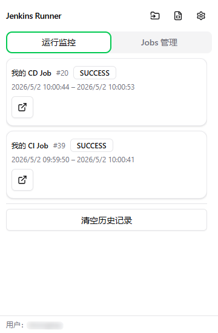

Jenkins 轻量编排与状态跟进。以下为 Chrome 网上应用店素材用 1280 × 800 画板固定为 1280×800 像素（CSS 锁定宽高）；左侧为产品介绍文案，右侧为界面截图。可对单张画板截图用于 Chrome 网上应用店。
资源路径 ../1.png · ../2.png ·
../3.png
在触发构建前就完成参数编排：分支、环境、发布方式一次配齐并随 Job 固化。下次执行无需回到 Jenkins 里逐项填写，把「重复劳动」留在扩展外。

把散落在书签、文档和口头约定里的 Job 入口，收敛到同一套管理视图。按项目浏览、编辑与触发，谁接手都能快速对齐团队里的「标准发布路径」。

触发后轮询构建状态：排队、执行、完成全程在扩展内可读。无需反复刷新 Jenkins 任务页，也能在第一时间判断成败并跳转到日志与详情。
